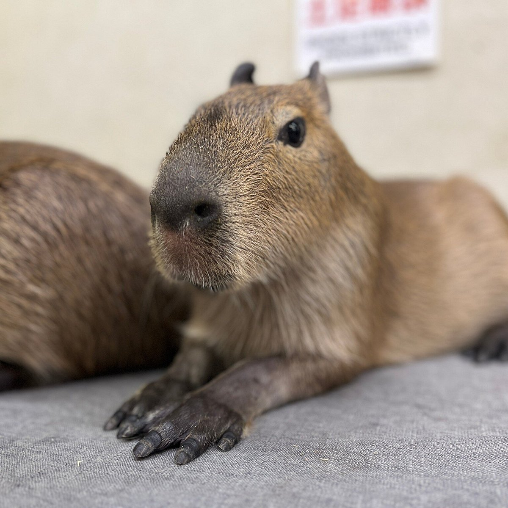
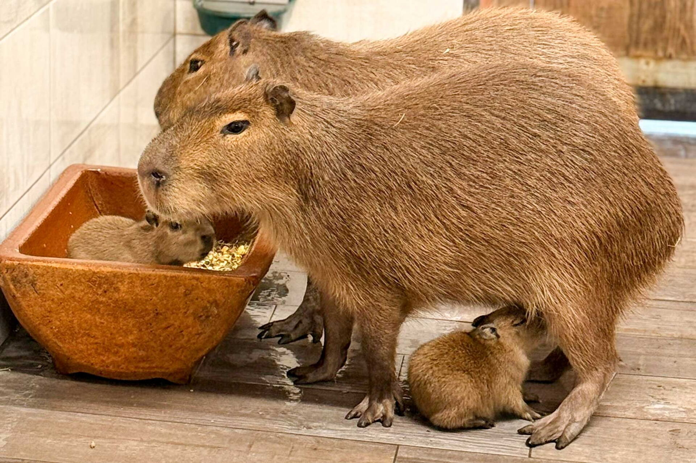

CURIOSIDADES DEL CAPYBARA
Aqui sabras curiosidades del capybara
El capybara, carpincho, chigüire, ronsoco o chigüiro (Hydrochoerus hydrochaeris), entre otras denominaciones, es una especie de roedor caviomorfo de la familia de los cávidos, nativa de Sudamérica. Se trata del roedor viviente de mayor tamaño y peso del mundo
El capibara común es la especie más conocida. Es el roedor más grande del mundo; los adultos alcanzan aproximadamente 1,3 metros de longitud y pesan más de 60 kilogramos. Las hembras también son ligeramente más grandes que los machos.
Al igual que algunas especies de conejos y liebres, los capibaras consumen su propio excremento. En biología, esta práctica se conoce como coprofagia y es relativamente común en el reino animal. De acuerdo con el experto de la FMVZ, los capibaras realizan esta acción porque sus primeras deposiciones son fermentadas por bacterias especiales en el ciego (una parte del intestino grueso encargada de ayudar en la digestión). Estos excrementos fermentados son ricos en nutrientes y celulosa, por lo que estos caviomorfos los consumen nuevamente para aprovechar mejor los nutrientes.

Los capibaras se han convertido en una especie de fenómeno de internet. Adorados por su carácter relajado, su naturaleza amigable y su estilo de vida tranquilo, son iconos de las redes sociales.
Pero más allá de los vídeos virales, estos fascinantes animales tienen mucho más que ofrecer. Aquí te presentamos algunos datos que quizás desconozcas sobre el roedor favorito de internet.
Debido al hábitat en el que vive, el capibara ha sido fotografiado compartiendo espacio con tortugas, monos e incluso con sus depredadores naturales, como los cocodrilos. Esto ha contribuido a su fama de ser “el amigo de todos los animales”. Si bien es una especie social, es importante precisar que, cuando es necesario, puede volverse agresivo.
